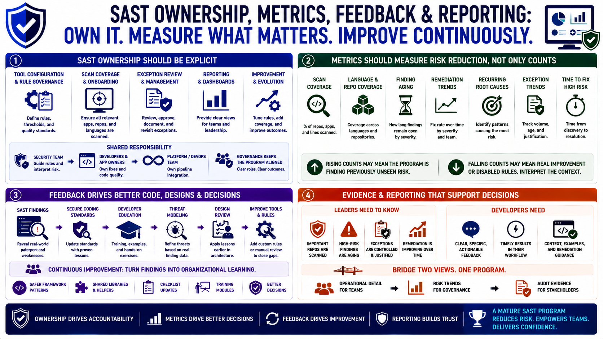

Governance, Metrics, and Continuous Improvement
Connecting to LMS... Progress: in progress

Narration
SAST ownership should be explicit. Someone must own tool configuration, rule governance, scan coverage, onboarding, exception review, reporting, and improvement. Security teams may guide rules and risk interpretation, but developers and application owners need responsibility for fixes. Platform or DevOps teams may own pipeline integration. Governance keeps the program from becoming a disconnected dashboard.
Metrics should measure risk reduction, not only finding counts. Useful measures include scan coverage, language and repository coverage, finding aging, remediation trends, recurring root causes, exception trends, and time to fix high-risk findings. A rising finding count may mean a program is discovering previously unseen risk, while a falling count may reflect real improvement or simply disabled rules. Metrics need interpretation.
SAST findings should feed back into secure coding standards, developer education, threat modeling, and design review. If several teams make the same mistake, the answer may be a safer framework pattern, a shared library, a checklist update, or a training module. If a tool repeatedly misses an important class of issue, manual review or custom rules may need to cover the gap. Continuous improvement keeps the program useful as systems change.
Audit evidence and management reporting should support decisions without overwhelming engineers. Leaders need to know whether important repositories are scanned, high-risk findings are aging, exceptions are controlled, and remediation is improving. Developers need clear and timely feedback. A mature SAST program connects both views: operational detail for teams, risk trends for governance, and evidence for stakeholders.